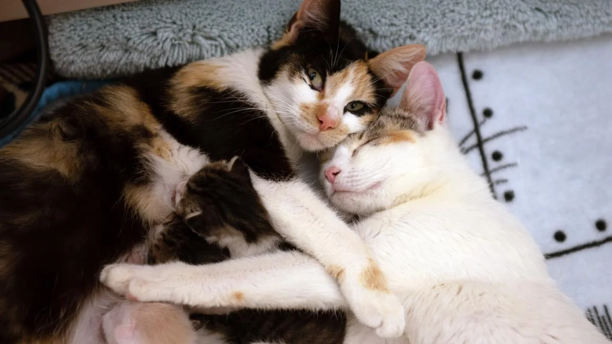

About Us
A group of ordinary but passionate people that believes every pet has a story, each one worth saving, each life individual and important. We are recognized as leaders in all aspects of animal care and rescue, with practices and innovations that are leading the way in animal care nationwide. For us rescuing animals is always the number one priority, and everything else was subordinate to that.
Our Mission
We’re making sure that every adoptable pet has access to the comfort of a foster home instead of a kennel in a shelter. We’re committed to creating communities, including our own workplace, in which everyone is valued and respected. Individually, we can save a few. But working together with you, and our foundation, corporate and network partners, we can save them all.
The Team
Yareline Merced
Co-Founder and Board Chair
Elijah Young
Co-Founder and Board Member
Kaila Bryson
Chief Brand & Communications Officer
Nazir Lattimore
Chief Program Officer and Board Treasurer